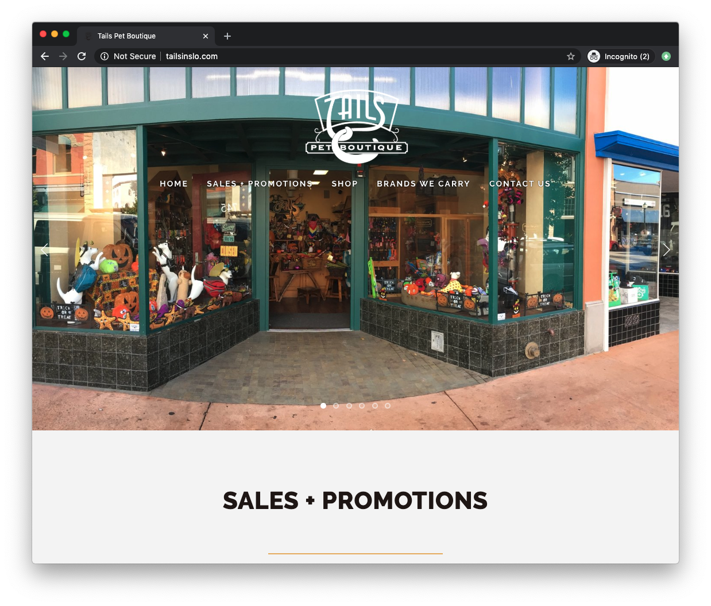

Final project proposal
Introduction
Schratter Pet Supplies
Small pet supply store focused on high quality food, toys, treats, etc.
Target audience
The target audience is all pet owners in the local area.
Their primary goals are too find the best quality products for their pets and educate themselves on proper care and nutition.
Comparative analysis
Tails Pet Boutique
Pet People
https://petpeoplelosgatos.com/
Pet Food Express

Website content
Home
Schratter Pet Supplies is dedicated to carrying the highest quality pet foods, toys, treats, and other pet care items. WE are highly trained in pet wellfare and welcome you and your pets to visit.
Inside the store displaying shelves and treats.
Raw Food
We carry multiple brands of raw food for both cats and dogs. Raw food matches the natural diets of our pets to best support their health and well being. Our staff are happy to help inform you and answer any questions or concerns you have in person.
Raw dog food on the shelf.
About Us
We started because we noticed too many big name brand stores popping up with staff who were not educated on pet care and customers frustrated and not getting the help they needed. Our pets deserve as much care and quality products as we buy for ourselves.
Front Entrance of the store.